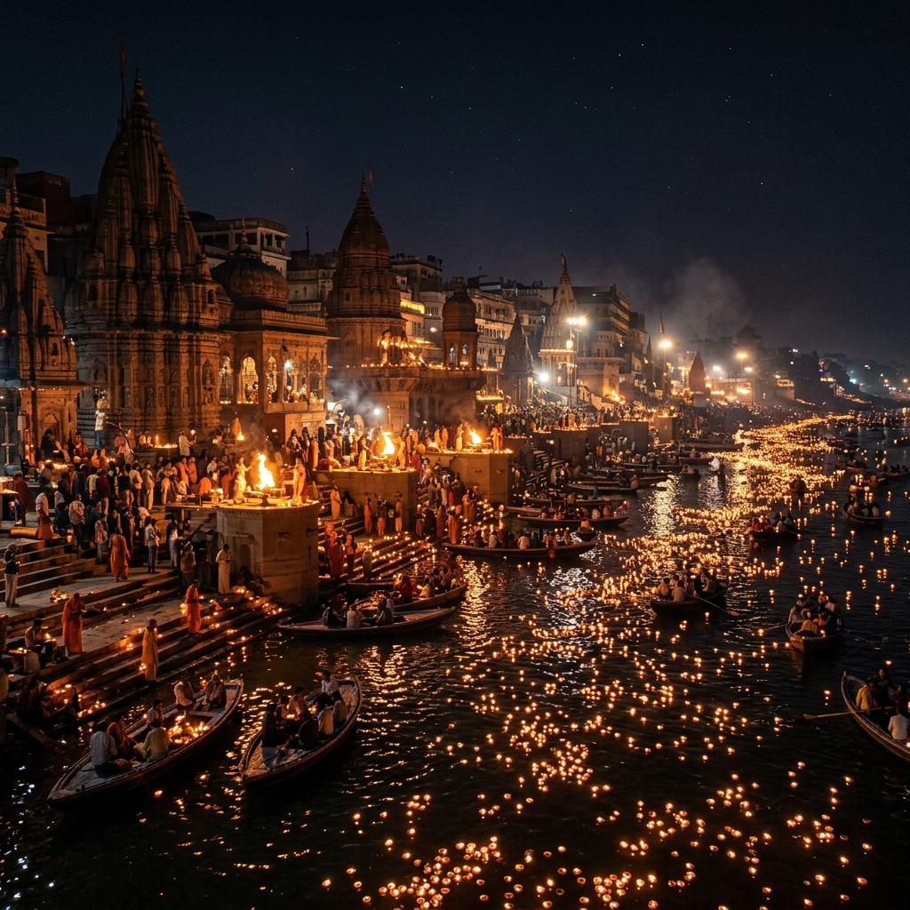

Divine Virtual Aarti
Immerse yourself in the spiritual vibration of Kashi Vishwanath.

READY FOR RITUAL

A SCHOOL PROJECT PRESENTATION
Blending Ancient Tradition with 21st Century Technology
"Digital Varanasi Ghats" is a tribute to Kashi, the oldest living city on Earth. Our project aims to bridge the gap between ancient spirituality and modern innovation. By digitizing the sacred ghats—from the sunrise at Assi to the eternal flames of Manikarnika—we ensure that the wisdom and serenity of the Ganges are preserved for the Gen-Z era and beyond.
Years of History
Sacred Ghats
Eternal Faith
Journey through the steps that connect the earthly realm to the divine flow of the Ganga.
Immerse yourself in the spiritual vibration of Kashi Vishwanath.
We leverage high-performance web animations, interactive SVGs, and modern design frameworks to tell a story that is thousands of years old. Our goal is to make heritage accessible to everyone, everywhere.